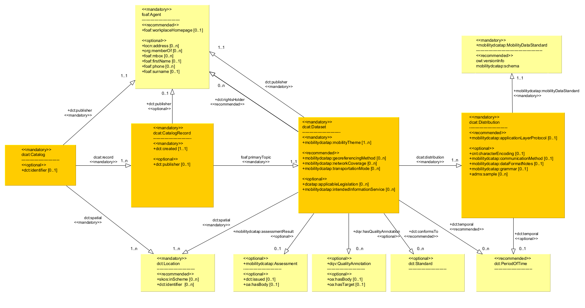

mobilityDCAT-AP is a mobility-related extension of the DCAT application profile for data portals in Europe (DCAT-AP) [[DCAT-AP]]. It allows for a structured, interoperable and harmonised way to describe and exchange metadata about datasets and data services with a mobility relevance.
This document is a product of sub-working group 4.4 of the NAPCORE project [[NAPCORE]] consortium.
The views expressed in this document are purely those of the Author(s) and may not, in any circumstances, be interpreted as stating an official position of the European Commission.
The NAPCORE consortium does not guarantee the accuracy of the information included in this study, nor does it accept any responsibility for any use thereof.
Reference herein to any specific products, specifications, process, or service by trade name, trademark, manufacturer, or otherwise does not necessarily constitute or imply its endorsement, recommendation, or favouring by the NAPCORE consortium.
All care has been taken by the author to ensure that s/he has obtained, where necessary, permission to use any parts of manuscripts, including illustrations, maps, and graphs, on which intellectual property rights already exist from the titular holder(s) of such rights or from her/his or their legal representative.
Document History
Introduction
This document presents version 1.0.1 of the specification for mobilityDCAT-AP, a mobility-related extension of the DCAT application profile for data portals in Europe (DCAT-AP) [[DCAT-AP]]. mobilityDCAT-AP aims to provide a structured, interoperable and harmonised approach to describing and exchanging metadata about datasets and about access for such datasets related to mobility, and in particular related to Intelligent Transport Systems (ITS). Its primary goal is to enhance the cross-border and cross-sectorial discoverability of ITS- and mobility-related datasets published on relevant data portals.
For this purpose, mobilityDCAT-AP introduces an RDF vocabulary and the corresponding RDF syntax, building upon the foundations of the original [[DCAT-AP]], while extending and customizing it for the mobility sector.
Context
Digitalisation in the mobility domain often implies that various data assets from various actors in the mobility system are made discoverable and accessible. Accordingly, internet portals for mobility data have been developed all over the world in recent years. These portals often have specific spatial or thematic coverage, e.g., exposing public-transport timetable data for one specific region. In addition, legal obligations, such as those established through the European Union's National Access Points (NAPs) [[NAPCORE-NAPs]], mandate the creation and population of such portals.
Metadata is a crucial building block for the accessibility and reusability of datasets within NAPs and other mobility data portals. However, unlike other domains like bibliography, there is currently no established common metadata approach across different mobility data portals. A common metadata approach can act as an important infrastructure and reference basis for providing harmonious and homogenous ITS- and mobility-related data descriptions across Europe, thus accelerating the easiness of searching, discovering, and accessing the proper data resources through the operated relevant data portals.
To serve this need, a dedicated Working Group within the EU-funded project NAPCORE [[NAPCORE-Metadata-Working-Group]] has been tasked with defining and maintaining a common metadata schema for all NAPs in Europe and other mobility data portals. Starting from the analysis of the European recommendations for the interoperability of data catalogues, the Working Group has defined a roadmap for the design, implementation and publication of the metadata schema.
The roadmap is explained in detail at [[NAPCORE-Metadata-preparatory-activities]]. It consists of five key steps: (1) gathering of requirements from experts and transport stakeholders, (2) definition of a conceptual model, (3) implementation of the conceptual model as a proper metadata scheme, (4) documentation of the scheme and provision of guidelines, and (5) hosting and publication of all outputs. The conceptual model contains definitions of essential metadata elements for mobility data portals. Further, this model is linked to established metadata specifications, particularly DCAT-AP. Moreover, the conceptual model serves as the foundation for a formal metadata specification as an extension to DCAT-AP, called mobilityDCAT-AP.
mobilityDCAT-AP enables harmonised, platform-independent metadata descriptions both in human-readable and machine-readable formats. The latter one ensures seamless integration of mobility-related platforms with third party systems by enabling the automated import and export of metadata via, for example, an API. As a specification based on the Resource Description Framework (RDF) schema, mobilityDCAT-AP leverages semantic technologies, enabling advanced querying and inference capabilities based on metadata. Following its release in the summer of 2023, this specification is being promoted for wide-scale usage in mobility data portals. To ensure its acceptance and sustainability, formal maintenance and governance structures have been established. Additionally, the development of a cross-border metadata registry will be demonstrated that will make use of mobilityDCAT-AP and provide for it a proof of concept.
mobilityDCAT-AP provides precise and unambiguous metadata designations for any data offering with mobility relevance, e.g. for representing the data topic, the data provider or the data format. It is highly recommended that the metadata management of National Access Points (NAPs) in Europe, or any other mobility data portals, is based on mobilityDCAT-AP in order to harmonise their data descriptions and ease the exchange of metadata in the mobility data ecosystem. Furthermore, this will ensure the basis for extended interoperability, among others, with other NAPs or data portals.
This work has been carried out in the context of sub-working group 4.4 of the [[NAPCORE]] project. NAPCORE is an EU-cofunded Programme Support Action under the GRANT AGREEMENT No MOVE/B4/SUB/2020-123/SI2.852232. This Programme Support Action aims at supporting the implementation of Delegated Regulations under Directive 2010/40/EU [[EC-ITS-Directive]], focusing on making infrastructure, safety, traffic, and travel data accurate and accessible to various user types, such as transport authorities or service providers through NAPs. It will stimulate and promote the coordinated provision of Intelligent Transport Systems (ITS) data through NAPs, thereby enhancing the quality of services that are based on this data.
Scope of this version: Preparatory Activities and Initial Release
This document aims to present the initial release of mobilityDCAT-AP, building upon preceding preparatory activities that include requirement analysis, a roadmap development and conceptual modeling. For detailed information about these preparatory activities, please refer to the relevant documentation at [[NAPCORE-Metadata-preparatory-activities]].
As [[DCAT-AP]], the Application Profile specified in this document is based on the specification of the Data Catalog Vocabulary (DCAT), originally developed under the responsibility of the Government Linked Data Working Group [[GLD]] at W3C, and significantly revised in 2020 by the W3C Dataset Exchange Working Group [[DXWG]]. DCAT is an RDF [[RDF11-CONCEPTS]] vocabulary designed to facilitate interoperability between data catalogues published on the Web. mobilityDCAT-AP incorporates additional classes and properties from other well-known vocabularies are re-used, where necessary.
This document, beyond what is defined in Conformance Statement, does not cover implementation issues such as data exchange mechanisms and the expected behavior of systems implementing mobilityDCAT-AP.
The Application Profile purpose is to facilitate data exchange. Therefore, the classes and properties defined in this document are only relevant for the data to be exchanged. There are no specific requirements for the systems involved in the data exchange process to implement particular technical environments, as long as they can export and import metadata in RDF, in conformance with mobilityDCAT-AP.
A DCAT-AP extension: Enhancing DCAT-AP for Mobility
mobilityDCAT-AP designed as an extension of DCAT-AP in conformance with the guidelines for the creating of DCAT-AP extensions [[DCAT-AP-EG]]. The DCAT-AP Application Profile, upon which this document is based, is version 2.0.1. of 8 June, 2020 [[DCAT-AP-v2.0.1]]. According to the same principles, DCAT-AP is in itself an extension of DCAT.
It is important to consider this dependency on the DCAT-AP specifications when reading and implementing mobilityDCAT-AP. The corresponding specifications should be consulted to address any gaps or missing information in this document.
Comparing mobilityDCAT-AP to [[DCAT-AP-v2.0.1]], the following editions have been made:
Introduction of new classes
Change to obligation levels for some existing classes in DCAT-AP
Addition of new properties to existing classes in DCAT-AP, including newly created properties
Change to obligation levels for some existing properties in DCAT-AP
Removal of certain optional or recommended properties from DCAT-AP
Refinement of usage notes for existing classes and properties from DCAT-AP, to address the special considerations in the context of mobility data portals
Reference to additional controlled vocabularies, including newly created controlled vocabularies
The class and property additions aim to capture some specific characteristics and features of mobility data, when exposed on NAPs and mobility data portals.
Some of these class and property additions align with the parallel DCAT-AP extension [[GEODCAT-AP-v2.0.0]], enabling compatibility between the two extensions in terms of class and property additions.
All classes and property additions are marked with a prepended “plus” sign (+) in this document, and summarised in the reference table in .
The removal of optional or recommended properties from DCAT-AP aims to minimise the vocabulary size of mobilityDCAT-AP, avoiding any misinterpretations and multiple usage of properties among data senders.
Properties removed from [[DCAT-AP-v2.0.1] are marked with a prepended “minus” sign (-).
Terminology used in the Application Profile
Part of the following text has been reused and adapted from [[DCAT-AP-v2.0.1]].
An Application Profile is a specification that re-uses terms from one or more base standards, adding more specificity by identifying mandatory, recommended and optional elements to be used for a particular application, as well as recommendations for controlled vocabularies to be used.
A Dataset is a collection of data published or curated by a single source and available for access or download in one or more formats. In the mobility context, this might be, e.g., a data collection about static parking information for truck drivers published by a road authority.
A Data Portal is a Web-based system that contains a data catalogue with descriptions of datasets and provides services enabling the discovery and re-use of the datasets.
In the context of mobility, this might be a National Access Point addressing the EC ITS Directive [[NAPCORE-NAPs]]. Accordingly, a NAP aims to "...facilitate access, easy exchange and reuse of transport-related data, in order to help support the provision of EU-wide interoperable travel and traffic services to end users." It is realised as "...a database, data warehouse, data marketplace, repository, and register, web portal or similar...".
In the context of NAPs, the terms "Metadata registry", "Metadata entry", and "Publication" are often used, which are explained in the following.
A Metadata registry is a digital recording of all metadata entries in a data portal, each describing the administration, organisation, and content of individual publications, including the published datasets and the corresponding distributions. The most visible Metadata representation is the dataset descriptions in a GUI of a NAP portal.
A Metadata entry (sometimes called metadata record or metadata set) describes the administration, organisation, and content of an individual publication, including the published dataset and the corresponding distributions.
A Publication is an abstract construct that covers a dataset published by a data publisher and which has one or multiple distributions.
mobilityDCAT-AP (as well as DCAT-AP) is expressed as an RDF schema [[RDF-SCHEMA]]]. An RDF schema provides a data-modelling vocabulary for RDF data. It provides mechanisms for describing groups of related resources and their relationships. This is done via a class and property system.
A Class is a group of resources. Classes are themselves resources. They are often identified by IRIs and may be described using properties.
A Property is a relation between subject resources and object resources.
The following figure shows the core elements of the DCAT-AP data model, denoting how the above-mentioned terms and relations are expressed as classes and properties. This figure also shows how NAP-related terms, such as publications, are related to this class and property structure.
In the following sections, classes and properties are grouped under headings ‘mandatory’, ‘recommended’ and ‘optional’. These terms have the following meaning, relating to the potential responsibilities of metadata senders and metadata receivers.
Such metadata senders and receivers are important actors for interoperable metadata, i.e., whenever metadata is exchanged between IT systems. This is the case when a data portal has metadata import and export functions. In this case, metadata senders and receivers are individual data portals. So, the following terms refer to the capability of a data portal to provide corresponding metadata in an export function or to read them in an import function.
Mandatory class: a receiver MUST be able to process information about instances of the class; a sender MUST provide information about instances of the class.
Recommended class: a receiver MUST be able to process information about instances of the class; a sender SHOULD provide information about instances of the class; a sender of data MUST provide information about instances of the class if such information is available.
Optional class: a receiver MUST be able to process information about instances of the class; a sender MAY provide the information but is not obliged to do so.
Mandatory property: a receiver MUST be able to process the information for that property; a sender MUST provide the information for that property.
Recommended property: a receiver MUST be able to process the information for that property; a sender SHOULD provide information for that property; a sender MUST provide information for that property if such information is available.
Optional property: a receiver MUST be able to process the information for that property; a sender MAY provide the information for that property but is not obliged to do so.
The meaning of the terms MUST, MUST NOT, SHOULD and MAY in this section and in the following sections are as defined in [[RFC2119]].
In the given context, the term "processing" means that receivers must accept incoming data and transparently provide these data to applications and services. It does neither imply nor prescribe what applications and services finally do with the data (parse, convert, store, make searchable, display to users, etc.).
Classes are classified as ‘Mandatory’ in if they appear as the range of one of the mandatory properties in .
All other classes are classified as ‘Optional’ in . A further description of the optional classes is only included as a sub-section in if the Application Profile specifies mandatory or recommended properties for them.
Namespaces
The namespace for mobilityDCAT-AP is: https://w3id.org/mobilitydcat-ap
The suggested namespace prefix is: mobilitydcatap
The Application Profile reuses terms from various existing specifications, following established best practices [[?DWBP]]. The following table indicates the full list of corresponding namespaces used in this document.
mobilityDCAT-AP Overview
mobilityDCAT-AP extends [[DCAT-AP-v2.0.1]] by including:
additional classes and properties (marked with a prepended “plus” sign (+) in this document, and summarised in );
additional recommendations on the use of classes and properties (documented in and );
additional controlled vocabularies (documented in , along with the ones used in [[DCAT-AP-v2.0.1]]).
These extensions are meant to provide a DCAT-AP-conformant representation of metadata specific to mobility data.
shows an excerpt of the UML diagram of the mobilityDCAT-AP model, showing these four central classes and their connecting properties.
Excerpt of mobilityDCAT-AP UML Class Diagram with focus on central classes
These four central classes represent a hierarchical concept when describing metadata via mobilityDCAT-AP. Firstly, the Catalogue as such is described, i.e., being the metadata register in a data portal. Secondly, there is the Catalogue Record, which describes the metadata entry, including its publication date. Thirdly, the Dataset is described. In fact, most metadata elements are covered here, including the content theme; the spatial and temporal context; quality information and others. Finally, the distribution describes a technical and organisational way to access the Dataset. In addition to the data format (e.g., a machine-readable syntax standard), the licensing terms are described here.
Please note that two of the connecting properties, dcat:record and dcat:distribution, have a mandatory obligation, in contrast to [[DCAT-AP-v2.0.1]]. Thus, a complete metadata set in accordance with mobilityDCAT-AP SHOULD contain at least one instance of these four classes. See also the usage notes for properties dcat:record and dcat:distribution.
shows a more complex UML diagram with selected classes and properties included in mobilityDCAT-AP.
It shows the four central classes (marked in orange), as explained above, as well as some supportive classes (marked in yellow).
In this diagram, the focus is on classes and properties which have been added in mobilityDCAT-AP in comparison to [[DCAT-AP-v2.0.1]]. All additions are marked with a prepended “plus” sign (+), and summarised in the reference table in .
Excerpt of mobilityDCAT-AP UML Class Diagram with focus on added classes and properties
shows a reduced UML diagram with classes and properties that are declared mandatory in mobilityDCAT-AP.
Excerpt of mobilityDCAT-AP UML Class Diagram with focus on mandatory classes and properties
A complete UML diagram with all elements is not shown here, but can be reconstructed from the UML diagram on [[DCAT-AP-v2.0.1]].
Application Profile Classes
Mandatory Classes
Recommended Classes
Optional Classes
Application Profile Properties per Class
A quick reference table of properties per class is included in . The list of included properties contains all the properties in [[DCAT-AP-20200608]], plus a selection of properties from [[VOCAB-DCAT-2]] and [[DCTERMS]], on which mobilityDCAT-AP expresses additional constraints or on which mobilityDCAT-AP wants to emphasise their usage.
Examples on the use of these properties, encoded in [[Turtle]], are included in the relevant sections. The examples are also available in [[Turtle]], RDF/XML [[RDF-SYNTAX-GRAMMAR]], and JSON-LD [[JSON-LD11]] from a separate folder.
+Address (Agent)
Recommended properties for Address (Agent)
Agent
Mandatory property for Agent
Recommended property for Agent
Optional properties for Agent
+Assessment
Optional properties for Assessment
Catalogue
Mandatory properties for Catalogue
Recommended properties for Catalogue
Optional properties for Catalogue
Catalogue Record
Mandatory properties for Catalogue Record
Recommended properties for Catalogue Record
Optional properties for Catalogue Record
Category
Mandatory property for Category
Optional property for Category
Category Scheme
Mandatory property for Category Scheme
Checksum
Mandatory properties for Checksum
-->
Data Service
Mandatory properties for Data Service
Recommended properties for Data Service
Optional properties for Data Service
Dataset
Mandatory properties for Dataset
Recommended properties for Dataset
Optional properties for Dataset
Distribution
Mandatory properties for Distribution
Recommended properties for Distribution
Optional properties for Distribution
Document
Identifier
Mandatory property for Identifier
Kind
Mandatory properties for Kind
Recommended properties for Kind
Optional properties for Kind
Licence Document
Recommended property for Licence Document
Optional properties for Licence Document
Location
Recommended properties for Location
Optional properties for Location
Media Type
+Mobility Data Standard
Optional properties for Mobility Data Standard
Period of Time
Recommended properties for Period of Time
Optional properties for Period of Time
Provenance Statement
+Quality Annotation
Optional properties for Quality Annotation
Relationship
Mandatory properties for Relationship
Rights Statement
Mandatory property for Rights Statement
Recommended property for Rights Statement
Standard
Controlled Vocabularies
Requirements for controlled vocabularies
The following is a list of requirements that were identified for the controlled vocabularies to be recommended in this Application Profile.
Controlled vocabularies SHOULD:
Be published under an open licence.
Be operated and/or maintained by an institution of the European Union, by a recognised standards organisation or another trusted organisation.
Be properly documented.
Have labels in multiple languages, ideally in all official languages of the European Union.
Contain a relatively small number of terms (e.g. 10-25) that are general enough to enable a wide range of resources to be classified.
Have terms that are identified by URIs, with each URI resolving to documentation about the term.
Have associated persistence and versioning policies.
These criteria do not intend to define a set of requirements for controlled vocabularies in general; they are only intended to be used for the selection of the controlled vocabularies that are proposed for this Application Profile.
Controlled vocabularies to be used
In the table below, some properties are listed with controlled vocabularies that MUST be used for the listed properties. The declaration of the following controlled vocabularies as mandatory ensures a minimum level of interoperability.
Compared with [[DCAT-AP-v2.0.1]], mobilityDCAT-AP makes use of additional controlled vocabularies. External organisations maintain some of these additional controlled vocabularies, and others are created and maintained by mobilityDCAT-AP.
Further, mobilityDCAT-AP is removing some recommended and properties from [[DCAT-AP-v2.0.1]], which are linked with controlled vocabularies. Thus, these controlled vocabularies are not relevant for mobilityDCAT-AP and are not listed in the following table.
Other controlled vocabularies
In [[DCAT-AP-v2.0.1]], chapter 5.3 and 5.4, several other controlled vocabularies are recommended for consideration, including EuroVoc, CERIF standard vocabularies, the Dewey Decimal Classification and sevaral licence-related vocabularies. For the scope of mobilityDCAT-AP, these other vocabularies have been analysed. However, none of such vocabularies has been found suitable or specific to mobility data portals, so no explicit recommendation for the usage of further vocabularies is given.
Regarding license-related vocabularies, [[DCAT-AP-v2.0.1]] is referencing to the vocabulary by the Open Digital Rights Language (ODRL) Initiative [[VOCAB-ODRL]], which seems rather complex for the purpose of mobilityDCAT-AP. Further, it refers to the Open Data Rights Statement (ODRS) Vocabulary [[ODRS]]. This vocabulary is introducing a central class called odrs:RightsStatement, which is semantically equal to class dct:RightsStatement from [[DCAT-AP-v2.0.1]]; and reusing some properties from [[DCAT-AP-v2.0.1]], such as dct:rights. Again, no explicit recommendation for the usage of such license-related vocabularies is given.
Provider requirements
In order to conform to this Application Profile, an application that provides metadata MUST:
Provide a description of the Catalogue, including at least the mandatory properties specified in .
Provide information for the mandatory properties specified in , if descriptions of Catalogue Records are provided – please note that the provision of descriptions of Catalogue Records is optional.
Provide descriptions of Datasets in the Catalogue, including at least the mandatory properties specified in .
Provide descriptions of Distributions, if any, of Datasets in the Catalogue, including at least the mandatory properties specified in .
Provide descriptions of Data Services, if any, of Datasets in the Catalogue, including at least the mandatory properties specified in .
Provide descriptions of all organisations involved in the descriptions of Catalogue and Datasets, including at least the mandatory properties specified in .
Provide descriptions of all category schemes that contain the categories that are asserted in any of the descriptions of Datasets in the Catalogue, including at least the mandatory properties specified in .
Provide descriptions of all categories involved in the descriptions of Datasets in the Catalogue, including at least the mandatory properties specified in .
For the properties listed in the table in , the associated controlled vocabularies MUST be used. Additional controlled vocabularies MAY be used.
In addition to the mandatory properties, any of the recommended and optional properties defined in MAY be provided.
Recommended and optional classes may have mandatory properties, but those only apply if and when an instance of such a class is present in a description.
Receiver requirements
In order to conform to this Application Profile, an application that receives metadata MUST be able to:
Process information for all classes specified in .
Process information for all properties specified in .
Process information for all controlled vocabularies specified in .
As stated in , "processing" means that receivers must accept incoming data and transparently provide this data to applications and services. It does neither imply nor prescribe what applications and services finally do with the data (parse, convert, store, make searchable, display to users, etc.).
Agent Types, Agent Roles and Contact Information
[[DCAT-AP-v2.0.1]] has the following note about agent roles:
The DCAT Application Profile [...] has a single property to relate an Agent (typically, an organisation) to a Dataset. The only such ‘agent role’ that can be expressed in the current version of the profile is through the property dct:publisher (http://purl.org/dc/terms/publisher), defined as “An entity responsible for making the dataset available”. A second property is available in the DCAT recommendation, dcat:contactPoint (http://www.w3.org/TR/vocab-dcat/#Property:dataset_contactPoint), defined as “Link a dataset to relevant contact information which is provided using VCard”, but this is not an agent role as the value of this property is contact data, rather than a representation of the organisation as such.
In specific cases, for example in exchanging data among domain-specific portals, it may be useful to express other, more specific agent roles. In such cases, extensions to the base profile may be defined using additional properties with more specific meanings. ...
mobilityDCAT-AP specifies this note as follows:
According to [[FOAF]], an Agent (via class foaf:Agent) may be of a type of a person (via sub-class foaf:Person), an organisation (via sub-class foaf:Organization), or a group (via sub-class foaf:Group).
For mobility data portals, it is expected that organisations are the main data actors, so the type organisation SHOULD be used. A person MAY be explicitly mentioned as an agent. In this case, he or she SHOULD be attributed to an organisation via the property org:memberOf, and, additionally, attributed with the personal name via properties foaf:firstName and foaf:surname.
mobilityDCAT-AP uses the class foaf:Agent in the context of describing entities:
responsible for the creation and maintenance of the data platform;
responsible for the creation and maintenance of a metadata entry;
responsible for the provisioning of a dataset; or
responsible for the content of the data.
Thus, two different agent-role properties are used: Publisher for classes Catalogue (dct:publisher), Catalogue Record (dct:publisher), and Dataset (dct:publisher); and Rights Holder for class Dataset (dct:rightsHolder). In contrast, other agent-role properties such as dct:creator are not used.
shows how the potential usages of foaf:Agent are represented in a UML diagram.
Excerpt of mobilityDCAT-AP UML Class Diagram with focus on agent-role properties
The class foaf:Agent is used to identify the entity with the above-mentioned roles. The properties under the class foaf:Agent also allow for providing (optional) contact details.
There is one further, recommended property dct:type describing the agent's type via a controlled vocabulary. This property MAY be used to determine, among others, the hierarchy of a public authority (local, regional, national, supranational). Such organisation types are often data providers at mobility data portals, so much information is seen beneficial. However, the controlled vocabulary from [[ADMS-SKOS]], as proposed by [[DCAT-AP-v2.0.1]], is not sufficient in the mobility context. Thus, further items are added by mobilityDCAT-AP to the controlled vocabulary, see .
In contrast, contact details with the goal to establish a direct contact between a data provider and a data user SHOULD be provided via the property dcat:contactPoint under class dcat:Dataset.
The range of dcat:contactPoint is the class vcard:Kind. A couple of properties for this class are defined, specifying contact information. Of these properties, vcard:fn and vcard:hasEmail are mandatory. The usage note of dcat:contactPoint gives more details on how to handle such contact information.
With such concept, there might be overlaps of the contact information under the properties dct:publisher and dcat:contactPoint. Depending on the portal system, the contact information can be populated to the data portal's user registry (in case, e.g., users are required to sign in before they use the data portal and/or from a dataset-specific contact information. A recommended way is to populate all information for dct:publisher automatically from the user's registry, and to allow an optional field "contact information" (name and email) when entering dataset-specific metadata, which can be freely entered be the metadata publisher. If such optional field is not entered (or not implemented), the user registry can still be retrieved.
Accessibility and Multilingual Aspects
Accessibility in the context of this Application Profile is limited to information about the technical format of distributions of datasets. The properties dcat:mediaType and dct:format provide information that can be used to determine what software can be deployed to process the data. The accessibility of the data within the datasets needs to be taken care of by the software that processes the data and is outside of the scope of this Application Profile.
Multilingual aspects related to this Application Profile concern all properties whose contents are expressed as strings (i.e. rdfs:Literal) with human-readable text. Wherever such properties are used, the string values are of one of two types:
The string is free text. Examples are descriptions and labels. Such text may be translated into several languages.
The string is an appellation of a ‘named entity’. Examples are names of organisations or persons. These names may have parallel versions in other languages but those versions don’t need to be literal translations.
Wherever values of properties are expressed with either type of string, the property can be repeated with translations in the case of free text and with parallel versions in case of named entities. For free text, e.g. in the cases of titles, descriptions and keywords, the language tag is mandatory.
Language tags to be used with rdfs:Literal are defined by [[BCP47]], which allows the use of the "t" extension for text transformations defined in [[RFC6497]] with the field "t0" [[CLDR]] indicating a machine translation.
A language tag will look like: "en-t-es-t0-abcd", which conveys the information that the string is in English, translated from Spanish by machine translation using a tool named "abcd".
For named entities, the language tag is optional and should only be provided if the parallel version of the name is strictly associated with a particular language. For example, the name ‘European Union’ has parallel versions in all official languages of the union, while a name like ‘W3C’ is not associated with a particular language and has no parallel versions.
For linking to different language versions of associated web pages (e.g. landing pages) or documentation, a content negotiation [[CONNEG]] mechanism may be used whereby different content is served based on the Accept-Languages indicated by the browser. Using such a mechanism, the link to the page or document can resolve to different language versions of the page or document.
All the occurrences of the property dct:language, which can be repeated if the metadata is provided in multiple languages, must have a URI as their object, not a literal string from the [[ISO-639]] code list.
How multilingual information is handled in systems, for example in indexing and user interfaces, is outside of the scope of this Application Profile.
Privacy and security considerations
The mobilityDCAT-AP vocabulary supports the attribution of data and metadata to various participants such as resource creators, publishers and other parties or agents, and as such defines terms that may be related to personal information. In addition, it also supports the association of rights and licenses with catalogued Resources and Distributions. These rights and licenses could potentially include or reference sensitive information such as user and asset identifiers as described in [[VOCAB-ODRL]].
Implementations that produce, maintain, publish or consume such vocabulary terms must take steps to ensure security and privacy considerations are addressed at the application level.
Acknowledgements
This work was elaborated by the NAPCORE Sub-Working Group (SWG) 4.4 [[NAPCORE-Metadata-Working-Group]].
A previous European activity to harmonise metadata at National Access Point was the Coordinated Metadata Catalogue (CMC) [[EU-EIP-CMC]].) This Catalogue describes a common minimum metadata set for NAP. The most recent version from 2019 contains definitions for 32 Metadata elements, including their description, types and obligation levels. These definitions are in a proprietary, human-readable format only.
The following mapping table has been prepared to show how the Metadata elements from the original Coordinated Metadata Catalogue compare to the classes and properties of mobilityDCAT-AP.
Please note that some CMC elements are mapped to 2 properties of mobilityDCAT-AP, due to semantic ambiguities of some CMC elements. When mapping such elements, the correct semantics need to be considered.
mobilityDCAT-AP minimum profile
Add description.
mobilityDCAT-AP example populations
To show how mobilityDCAT-AP can be deployed in practice, some example files have been produced. These denote how metadata descriptions can be populated using the mobilityDCAT-AP data vocabulary.
The first example is related to a real-life NAP data offering from the Swedish NAP. See the corresponding human-readable metadata description on the NAP portal.
The Swedish NAP also provides machine-readable representations of its metadata records in a proprietary DCAT-AP dialect, see the RDF/XML file for the example above.
This RDF/XML was converted into a metadata description according to the mobilityDCAT-AP v1.0.0 specification. It is fullfilling all mandatory and some recommended and optional elements from mobilityDCAT-AP v1.0.0. Within the RDF/XML example file, several comments are given regarding the original RDF/XML as follows:
OK = this element can remain from the original
PROPOSAL = this element can remain from the original; however, a proposal is given following the usage notes of mobilityDCAT-AP
MODIFIED = changed element
ADDED = new element
The above RDF/XML example population was further formatted as a TTL file. Lastly, a reduced example population is provided, only considering mandatory elements from mobilityDCAT-AP v1.0.0.
Altogether, the following files are provided as example population:
SE NAP dataset expressed in original proprietary DCAT-AP (RDF/XML)
SE NAP dataset expressed in mobilityDCAT-AP: original population (RDF/XML)
SE NAP dataset expressed in mobilityDCAT-AP: original population (TTL)
SE NAP dataset expressed in mobilityDCAT-AP: minimum population (RDF/XML)
SE NAP dataset expressed in mobilityDCAT-AP: minimum population (TTL)
Further example populations, also looking at real-life data offerings on other NAPS, will be provided in the future.
mobilityDCAT-AP Wikipage
As an addition to this specification, a "mobilityDCAT-AP Wiki" has been published. This serves as a practical orientation for users of mobilityDCAT-AP. In particular, it guides deployers (e.g., developers and operators of NAPs and data platforms) in the implementation phasis of mobilityDCAT-AP.
This includes additional explanations and examples for specific vocabulary elements, recommendations for metadata handling and exposure on individual IT systems, as well as advice on metadata quality and validation processes.
Starting point of mobilityDCAT-AP 1.0.0 (01 January 2023)
Document completely re-written starting from the [[DCAT-AP-v2.0.1]] and [[GEODCAT-AP-v2.0.0]] specifications, with the purpose of using a consistent document structure across DCAT-AP specifications.
Summary of changes to Application Profile classes and properties
Since this is the initial release of mobilityDCAT-AP, there are no changes yet.